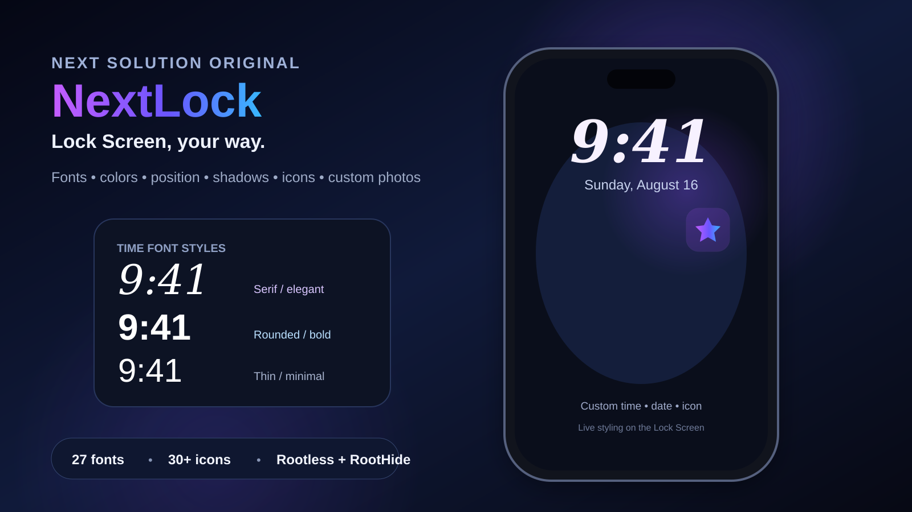
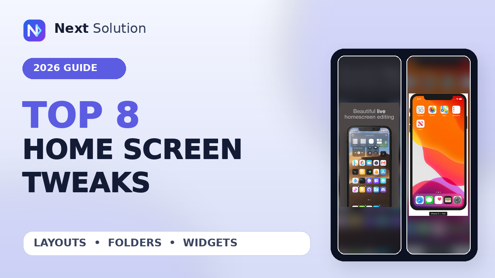

NextLock 1.0.1 — Lock Screen, Your Way
Change time and date fonts, size, color, position and shadows, then add 30+ icons or your own transparent sticker-style photo.
See features and install →Discover useful iPhone tweaks, understand rootless compatibility, and follow practical tutorials with direct links to the original source.
Release details and guides organized so you can quickly see what a tweak does, where it comes from, and what to verify.

Change time and date fonts, size, color, position and shadows, then add 30+ icons or your own transparent sticker-style photo.
See features and install →
Follow the complete A12-family and A13 walkthrough with official downloads, Sileo setup, real iPad proof, and the compatibility limit newer devices need to know.
Open the full guide →
Compare layout editors, folder upgrades, dock tools, widget cleanup, and quick actions using 16 real feature screenshots and current source notes.
See all 8 tweaks →
FreeformGrid 1.0.3 is a Home Screen tweak described as placing icons in any open grid position on rootless iOS 17 jailbreaks.
Read guide →
Crane 1.3.18-2 is a commercial package by opa334 described as providing multiple containers for applications. Review its architectures and dependencies.
Read guide →
Learn what Unseen 0.0.3 is listed to do, its architectures and dependencies, and what to verify before installation.
Read guide →
Review Kayoko 4.3.1, including its clipboard-focused description, listed architectures, dependencies, and installation checks based on the supplied package metadata.
Read guide →Double-tap empty Home Screen space to lock your iPhone, with one clean enable switch for the verified runtime.
Read guide and download →Redesigned Favorites, Recents, Contacts, and Keypad with the 0.4.16 stability rollback for RootHide and rootless setups.
Read guide and download →Review supported hardware, preparation, the palera1n process, and common troubleshooting steps before you begin.
Read the tutorial →Browse useful packages by category, with repository and installation details gathered in one place.
Browse the collection →Go straight to the type of jailbreak information you need.
Features, package metadata, source links, and honest compatibility notes.
Explore tweaks → 02Preparation, supported devices, installation steps, and troubleshooting.
Open tutorials → 03Collections and package information for modern rootless environments.
Browse rootless → 04Original Next Solution videos when seeing each step is more useful.
Watch videos →Repository metadata can confirm a package name, version, architecture, dependencies, and developer notes. It cannot always confirm every iOS version or device combination.
Next Solution keeps those limits visible, links to the original source, and does not mirror third-party tweak packages in its guides.
See the guide library →Important checks that apply to every jailbreak and package guide.
No. Modifying system software can cause instability, security issues, data loss, or compatibility problems. Back up important data and use instructions confirmed for your exact device and software version.
No. Architecture is one compatibility fact. Device model, iOS release, bootstrap, dependencies, and developer notes may also matter.
Version, architecture, dependencies, and feature claims are compared with public repository metadata and original source pages before publication.
Information pages do not mirror third-party package files. They retain a direct link to the original source so you can verify current details there.